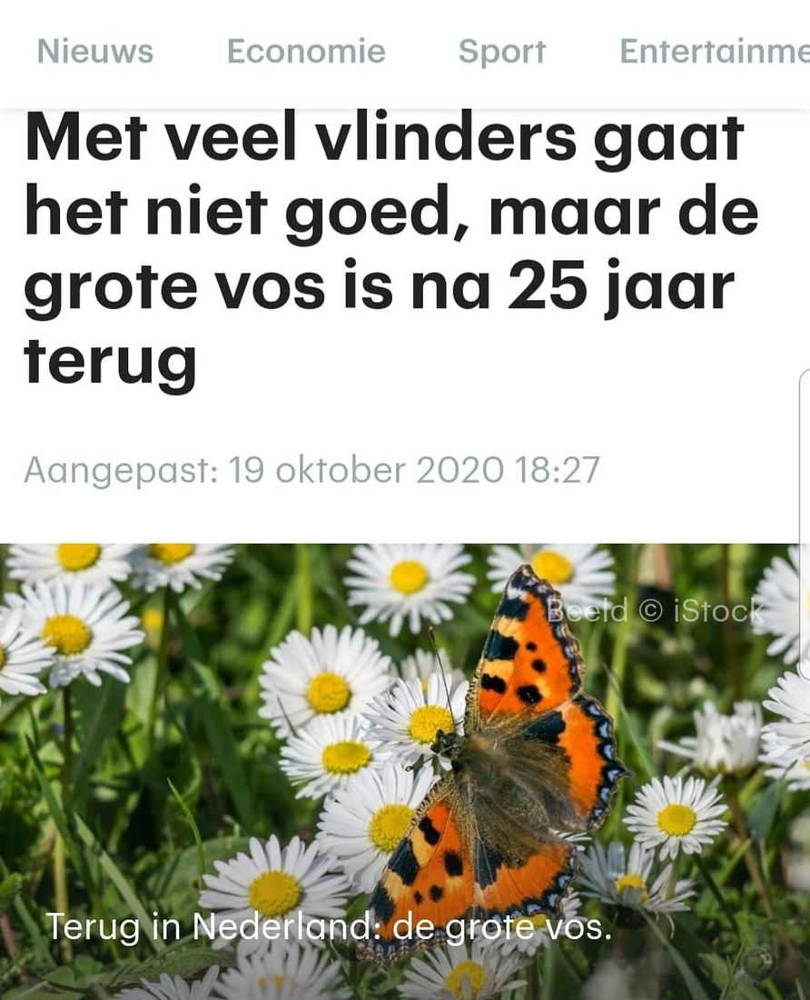

Kleine vos, geen grote vos
26 december 2020 · RTL Nieuws
- Op de foto
- Kleine vos
- Het ging over
- Grote vos

Fijn dat het goed gaat met de grote vos in Nederland! Toch @rtlnieuws ? Dan zou je ook verwachten dat er een mooie foto van te vinden zou zijn.
In plaats van de afgebeelde, maar ook mooie, Kleine vos!
Fijne kerst allemaal!